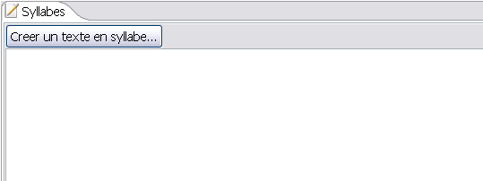
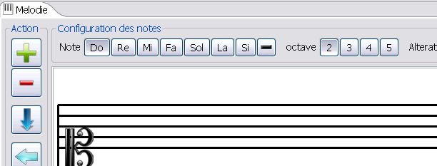

Un chant SINGER SIVOX est composé de deux parties : une partie texte qui correspond au texte chanté découpé en syllabes

Il est également composé d'une partie mélodie qui permiet de composer un ensemble de note
